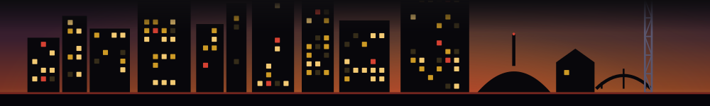

Bingo Loco
Skydeck on Broadway
One-night Bingo Loco event at Skydeck on Broadway. Single date listed.

Every week the machine watches far more of Nashville than lands in Friday's email. This is a peek at that wider pool: the time-limited windows we are tracking right now, before the week gets narrowed to the picks. Verified entries only -- if we cannot stand behind it, it is not here, and we never guess a close date.
One-night Bingo Loco event at Skydeck on Broadway. Single date listed.
Candlelight concert series does Halloween classics at NMAAM. Tickets from $46 after 20% discount off $57.50.
String ensemble plays Michael Jackson catalog at NMAAM. Tickets from $74.
DJ Shadow performing his landmark 1996 album Endtroducing in full for its 30th anniversary. One night at Marathon Music Works.
One-night show from Australian DJ/producer Dom Dolla at The Pinnacle. Single date listed.
Free one-day artisan market and craft fair in East Nashville. No admission, open morning.
One-night tribute concert honoring Dolly Parton at 3rd & Lindsley. Single date, specific tribute billing.
One-night comedy show at the Ryman from Josh Johnson. Single date listed.
One-night show from Machine Girl at Brooklyn Bowl. Single date listed.
Puesto opens its doors Friday at 11am. First day of service for this new restaurant.
One-day running expo at First Horizon Park. Single afternoon session.
One-night show at Brooklyn Bowl. Single Friday date listed.
One-night performance billed as Women in Harmony in downtown Franklin. Single show, 90-minute runtime listed.
Outdoor dinner on the grounds of the Tennessee Agricultural Museum in Crieve Hall.
Charity clothing sale in East Nashville; one-day event at a Gallatin Ave location.
Free fall festival at Fat Bottom Brewing. One Saturday, no ticket required.
Halloween film series closes out its run with a 2026 film, the only new release in the FEAR FEST month-long slate. Listed time span is unusually wide.
Part of the FEAR FEST Halloween film series, one of three screenings running on PumpkinFest Saturday in downtown Franklin.
Afternoon screening of the 1991 film as part of the month-long FEAR FEST Halloween series, running alongside PumpkinFest.
Saturday evening R&B event at NMAAM, 7pm to 10:30pm. One-night ticketed experience in the museum space.
One-day Halloween storytelling festival at the Tennessee State Museum, Saturday only. Museum setting adds obvious atmosphere for the format.
Three-night Ryman residency for Jason Isbell and the 400 Unit. Each night is its own ticketed show; Saturday is the final date.
Six-night Ryman residency with a different opening act each night from a Nashville fixture who has made this room his own.
Halloween bar crawl built around tequila with a costume contest; starts at Barrel Proof in Germantown.
This is the watch-list, not the newsletter. Friday's email is the narrowed, curated read -- the week's here-then-gone Nashville windows worth your time, in your inbox before they close. Free.
Get Friday's list, free →This page does not ping you and does not track what you click. It is a pull surface on purpose -- no alerts, no notifications. The way to stop finding out a day too late is the Thursday list.
Everything here is real and every close date is its own stated date, read from the Fleeting. discovery crawl and shown with its source link. Unconfirmed windows are held off the radar entirely, and dates that do not read cleanly are shown as "on watch" rather than guessed. Want the narrowed daily read instead? See the conditions board, look one up on Still On?, or place them on the map.